01
What Do You See?
The robot detects visible objects and returns an object-level response from the current camera view.
A custom fixed-base humanoid robot that combines vision-guided perception, a robot-specific 1B language model, structured JSON tool calling, deterministic safety validation, inverse kinematics, and embedded motion control in one end-to-end physical system.
Project Overview
The system allows a user to communicate with the robot through natural-language commands. Camera observations and the current robot state are provided to a fine-tuned language model, which proposes a structured robot action rather than directly controlling motors.
A deterministic Planner and Controller then validate, repair, reject, or clarify the proposed action before any physical execution. This separation keeps the LLM at the reasoning level while safety-critical motion remains under conventional control.
System Architecture
User input, visual perception, robot state, LLM reasoning, action validation, motion planning, and low-level actuator control are separated into clear modules.
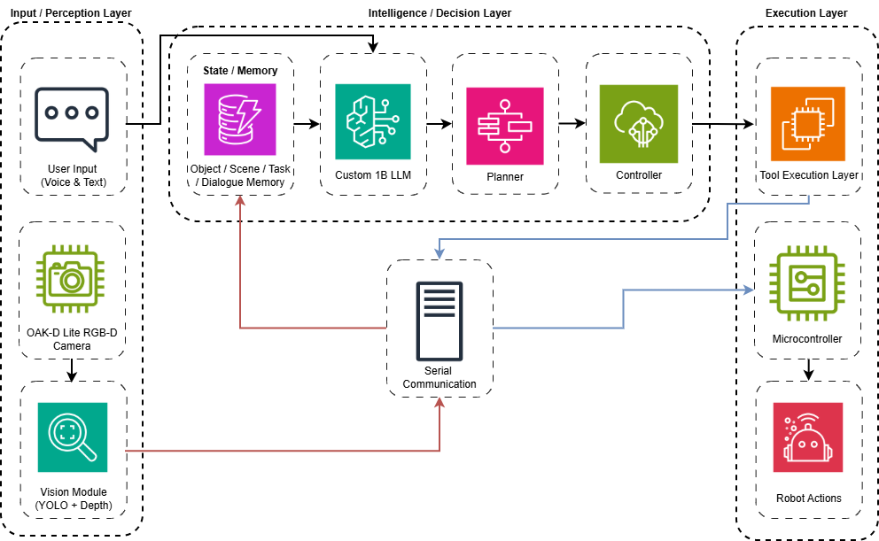
Live Demonstrations
The robot detects visible objects and returns an object-level response from the current camera view.
The robot receives a target command, searches with active head movement, and centres the detected object.
The full pipeline detects the target, validates the tool call, plans an arm pose, and attempts a physical grasp.
Mechanical System
The robot was developed from mechanical concept and CAD design through 3D-printed manufacture, electronics integration, calibration, and physical testing.
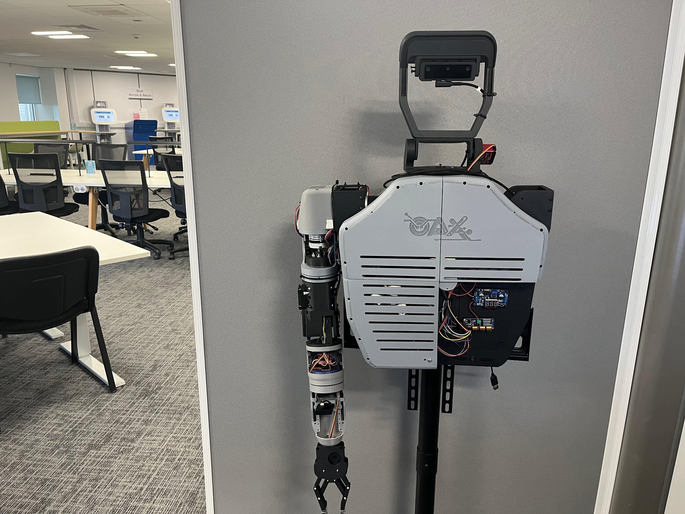
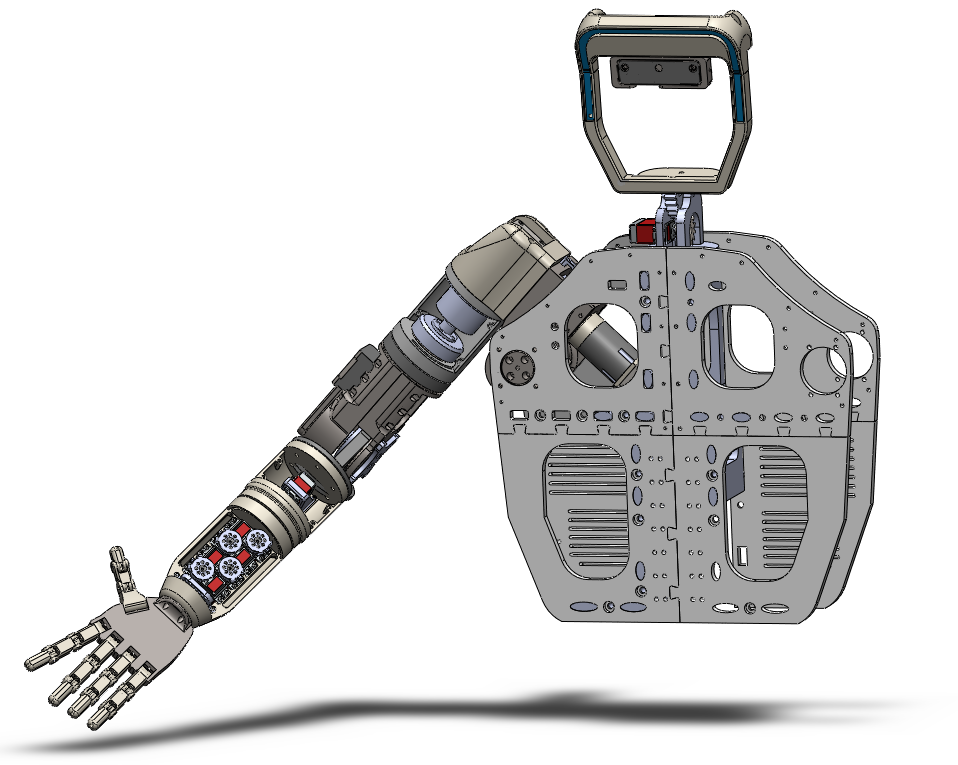
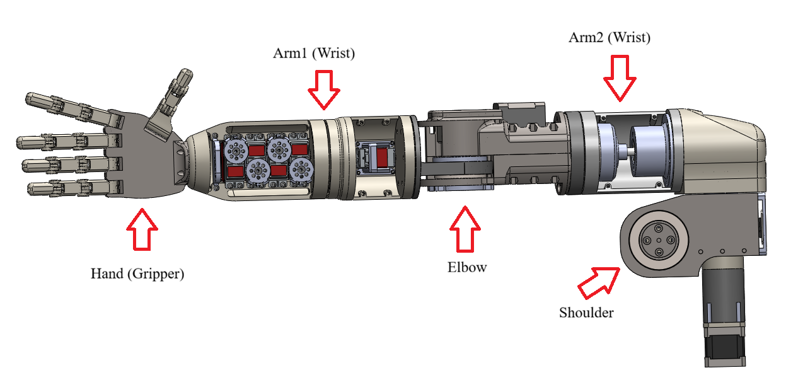
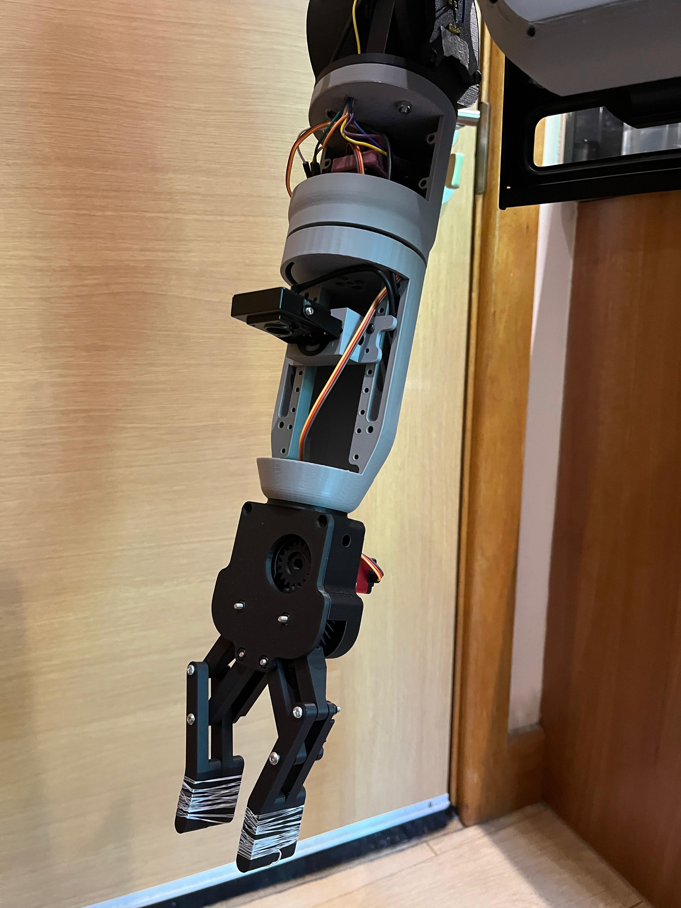
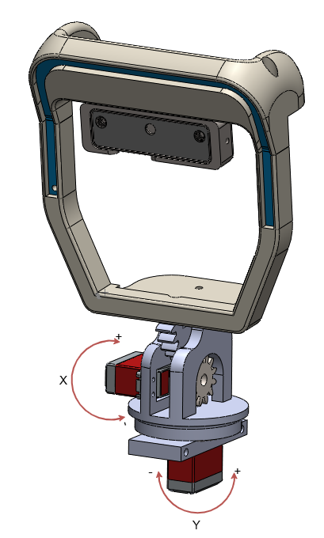
Perception & Motion
Object labels, confidence, depth, and image-centre information are stored as structured state. Spatial mapping and IK/FK then convert target information into candidate arm poses before serial execution.
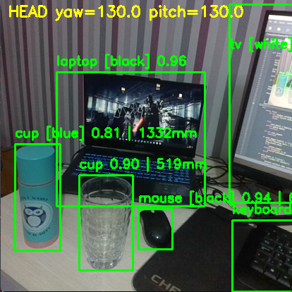
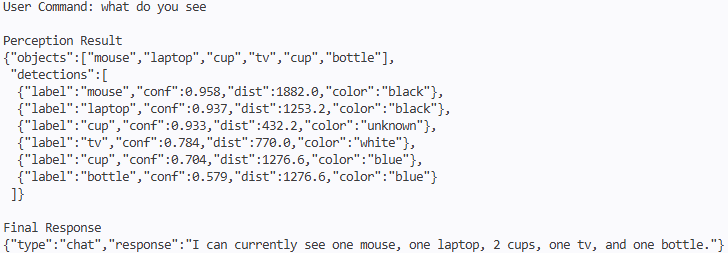
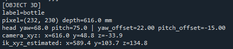
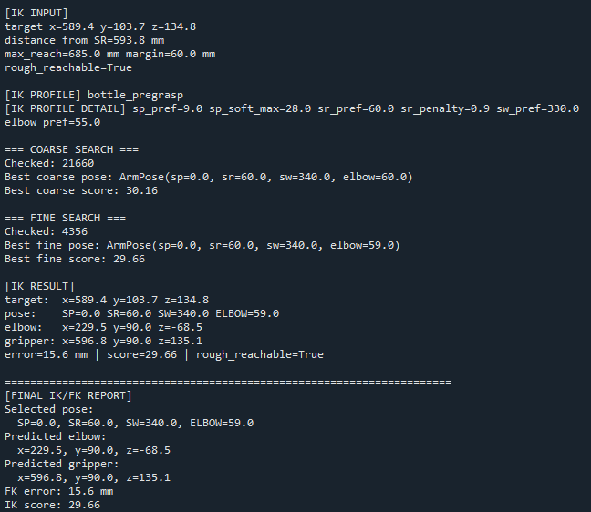
Planner–Controller Safety
Each proposed tool call is checked against the action schema, current robot state, target availability, reachability, and safety constraints. The result can be approved, repaired, rejected, or returned for clarification.
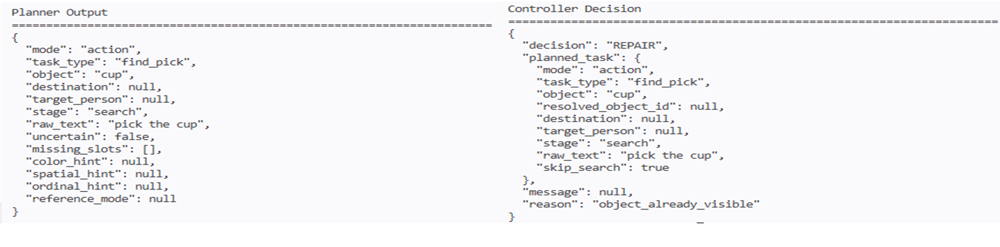
Evaluation
The project was evaluated at individual pipeline stages rather than presenting only final-task success.
| Evaluation stage | Result |
|---|---|
| Visible-object detection | 90% |
| Target-object detection | 95% |
| Object search with head movement | 75% |
| Object centring | 85% |
| JSON validity | 100% |
| Planner/Controller validation handling | 100% |
| Successful physical pick | 10% |
Hardware Integration
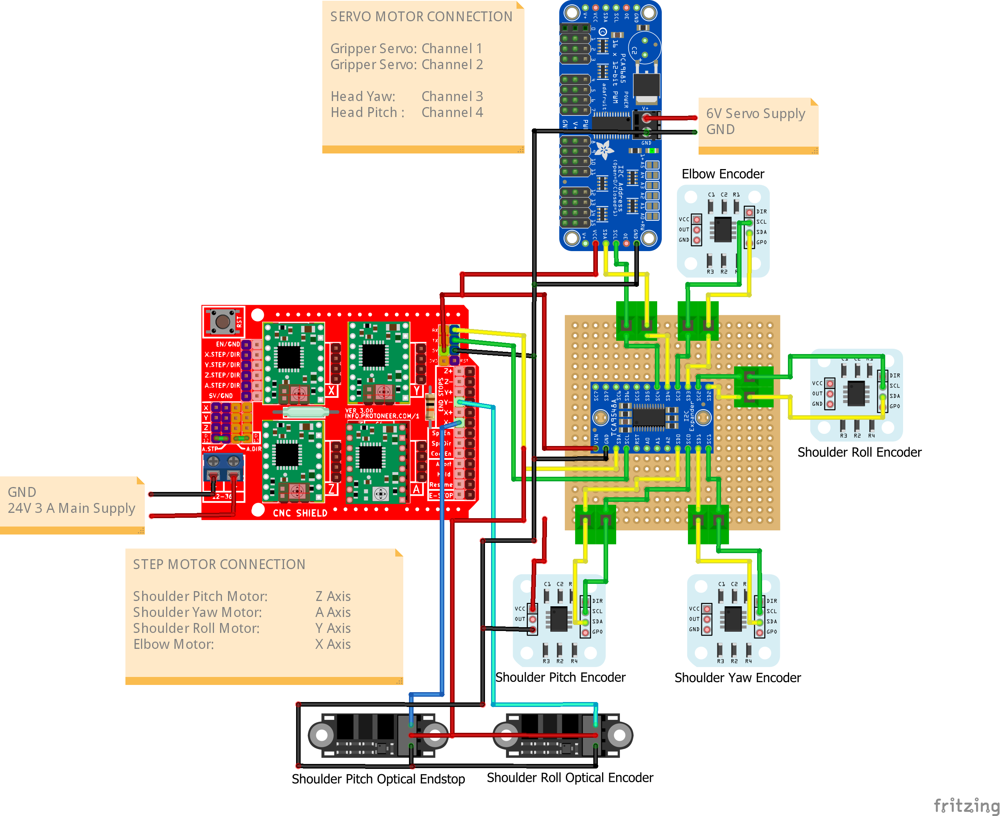
Project Links
The portfolio page presents the complete system at a high level. Source code, model files, examples, and technical documentation remain available through the project repositories.